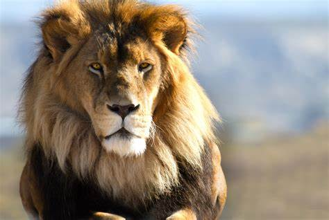
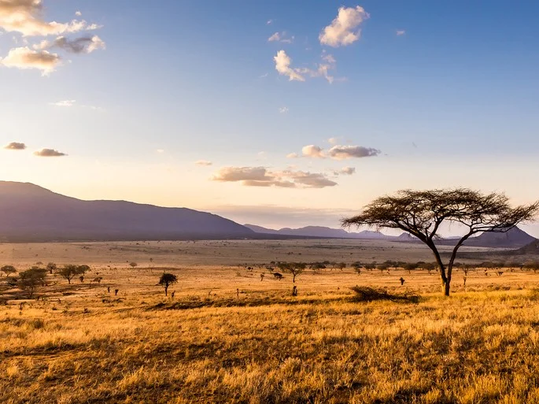

Leão
O leão é um mamífero pertencente à ordem Carnivora e família Felidae, sendo conhecido como “rei das selvas”. Ele se alimenta de outros animais, como gnus e zebras, e vive em grupos, que apresentam divisões bem marcadas, sendo o macho responsável pela defesa do grupo e a fêmea pela caça e cuidado com os filhotes. Apesar de serem admirados por sua força, atualmente as populações de leões estão em declínio, sendo a espécie classificada como vulnerável pela IUCN (sigla em inglês para União Internacional para a Conservação da Natureza). Os leões costumam ser divididos em subpopulações asiáticas e subpopulações africanas. Os leões se destacam por serem felinos que formam grupos sociais, sendo possível encontrar dentro desses grupos uma hierarquia bem definida. As fêmeas atuam garantindo a captura de alimento e o cuidado com os filhotes, enquanto os machos são responsáveis pela proteção do grupo contra o ataque de outros leões. Para proteger seu território, os machos eliminam urina como forma de marcar a área e emitem rugidos fortes, que alertam e afugentam animais que invadem a sua área. Os grupos de leões podem ser pequenos ou formados por muitos indivíduos, existindo grupos com cerca de 40 leões. Geralmente, nesses grupos, encontram-se de três a quatro machos, e os demais são fêmeas e seus filhotes. Os filhotes fêmeas tendem a permanecer no grupo, enquanto os machos podem formar outros bandos, roubando a liderança de um leão que liderava outro grupo. Os leões vivem, em média, 25 anos em cativeiro e 15 anos em vida selvagem.
Caracteristicas
Os leões são mamíferos carnívoros e um dos grandes felinos mais emblemáticos do mundo. Eles possuem um corpo grande e musculoso, com os machos pesando entre 150 e 250 quilos e as fêmeas entre 90 e 180 quilos. Sua pelagem é geralmente dourada ou bege, com filhotes apresentando manchas que desaparecem com o tempo. Os machos se destacam por sua juba, que varia de cor entre bege e preto, aumentando de tamanho e densidade com a idade, sendo um símbolo de força e saúde. As caudas dos leões são longas, terminando em uma ponta peluda preta, usada tanto para equilíbrio quanto para comunicação. Ao contrário de outros grandes felinos, os leões vivem em grupos sociais chamados alcateias, compostos por fêmeas, filhotes e alguns machos dominantes. As fêmeas assumem a maior parte da responsabilidade pela caça, enquanto os machos protegem o território e o grupo de intrusos. A comunicação entre os membros do grupo ocorre por meio de rugidos, sinais visuais e olfativos. O rugido do leão, aliás, é uma de suas características mais impressionantes, podendo ser ouvido a até 8 quilômetros de distância, servindo para marcar território e reunir o grupo.

Habitat
Os leões habitam principalmente regiões de savanas, pastagens e florestas abertas. Esses ambientes fornecem a combinação ideal de vegetação para esconderijo, espaço aberto para caça e a presença de presas. Eles são encontrados predominantemente na África subsaariana, mas uma pequena população isolada de leões asiáticos vive no Parque Nacional da Floresta de Gir, na Índia. Na África, os leões preferem savanas com gramíneas altas e arbustos dispersos, o que oferece cobertura para emboscadas durante a caça. Eles evitam desertos extremos, florestas densas e áreas montanhosas, pois esses ambientes não atendem às suas necessidades de caça e sobrevivência em grupo. A disponibilidade de água também é importante, embora os leões sejam bastante adaptados à escassez, conseguindo obter grande parte da hidratação necessária a partir do sangue e dos fluidos das presas. Já os leões asiáticos, que diferem ligeiramente em comportamento e aparência dos africanos, ocupam florestas secas de folha caduca e regiões semiáridas. O habitat deles é mais fragmentado, e eles convivem mais de perto com humanos, o que aumenta os desafios de conservação. A perda de habitat é uma das principais ameaças para os leões. A expansão de atividades humanas, como agricultura e urbanização, reduz as áreas disponíveis para eles e suas presas. Isso resulta em confrontos diretos com humanos, especialmente em áreas onde o gado é atacado pelos leões em busca de alimento. A conservação do habitat é essencial para a sobrevivência dos leões. Áreas protegidas, como reservas e parques nacionais, desempenham um papel fundamental em manter populações viáveis desses grandes felinos e garantir que seu papel como predadores de topo continue equilibrando os ecossistemas onde vivem.
